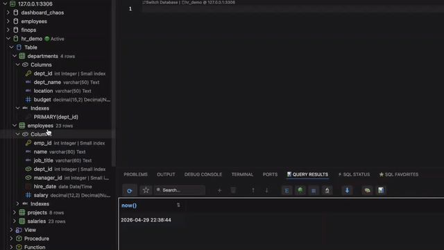
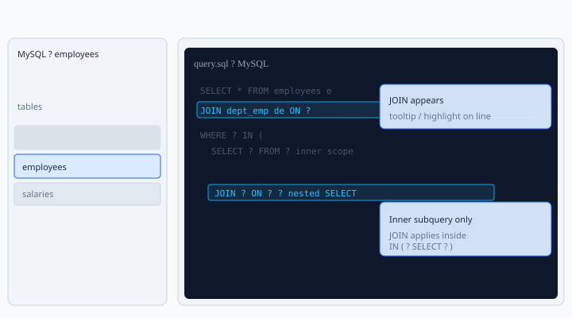

Query builder
Schema-driven assembly in the SQL editor: drag tables and columns from the live connection tree, type shortcuts before you drop, and let foreign‑key metadata drive JOIN predicates. Generated SQL stays plain text—you keep full control.
Overview
SQLLens.AI’s Query Builder is not a separate diagram canvas. It sits in the editor next to your code: the explorer tree is the source of truth for object names and relationships, drops insert or extend real MySQL statements, and you refine with normal editing.
When it shines: you need correctly spelled identifiers, repeatable scaffolds, or multi‑table JOINs anchored to FK metadata—as opposed to exploratory natural‑language authoring (that's a better fit for SQL with AI).
- Speed:
SELECT,UPDATE,DELETE,INSERTstubs without typing long qualified names. - Correctness: JOIN
ONconditions can leverage cached FK paths (multiple paths ⇒ disambiguation instead of silently guessing). - Clause awareness: Column drops respect where the caret sits—lists, predicates,
JOIN … ON,ORDER BY, etc.
Some teams gate high‑drag features behind sqllens.ai Cloud entitlement flag qb (see Cloud & account if your org uses sqllens).
Demo (GIF)
Short screen recording bundled with these docs: intro plus Query Builder in VS Code — open a .sql file, optionally type s for a SELECT scaffold, drag a table from the sidebar tree into the editor, then continue with JOINs and clauses as shown.
Query Builder demo


SELECT scope — complements the GIF above.Typing @com, @dba, schema columns, JOIN ON lines, and favorites uses the same editor — see the dedicated SQL autocomplete guide (screenshots, @ channels, keyboard shortcuts, and troubleshooting).
Drag tables & columns
Open a .sql tab bound to the same connection/database as your tree (same rules as workspace Active state). Drag a table for statement scaffolds, or drag columns into the clause under the caret. Views behave like tables.
Shortcut tokens typed immediately before releasing the drag are expanded together with that drop—the vocabulary follows below.
Smart SQL on drop
Drops infer intent from caret position:
- New / empty territory → starters such as
SELECT … FROM … LIMIT …. - Inside a projection list → add the column identifier.
- Along predicates → templates such as placeholders or bounded filters.
- Onto an existing
FROMspan → JOIN scaffolding with FK-derivedONtext.
JOINs & dialogs
Bringing an additional fact table evaluates the FK graph. Multiple eligible paths surface prompts so you pick an explicit topology (bridge tables vs shortcuts). Completion lists may reinforce join synonyms such as LJ, IJ, or spelled‑out verbs—pair them with the drag gesture you already use.
Shortcuts before a drop
The demo above (GIF and diagram) summarizes the core gestures. This section collects the shortcut vocabulary: classic tokens before a drag, JOIN synonyms, WHERE / aggregate helpers, and clause-letter shortcuts for SELECT / UPDATE / DELETE stubs.
SQLLens.AI recognizes a wide set of tokens (core DML, JOIN types, WHERE / aggregates, DDL-style fragments, metadata and maintenance helpers). Use autocomplete in the editor to discover spellings that match your muscle memory.
What the GIF and diagram cover
Narration aligned with Demo (GIF) plus the schematic:
- Starter: optional s → drag a table from the tree →
SELECT-style scaffold with placeholders. - JOIN: when you extend the query,
JOIN … ON …can appear with FK-aware conditions (diagram shows the highlighted JOIN moment). - Subquery: nested
SELECT/INpatterns keep JOIN logic scoped inside the inner query where intended (diagram).
What’s new in the editor
The GIF reflects current shipping Query Builder UX in VS Code; extension updates may add gestures before these docs refresh.
Type the shortcut at the end of the current line in the SQL editor, then drag a table or column from the connection tree. Drops are clause-aware: caret in WHERE vs SELECT vs JOIN … ON changes the fragment.
Common mappings: s → SELECT-style flow; d → DELETE (not “descending”—use od for ORDER BY … DESC); c → CREATE TABLE patterns; desc / dsc → DESCRIBE.
Shortcut families:
- Classic + JOIN: s / spelled
selectvariants; JOIN tokens lj / LJ, ij, spelled join words—combine with dragging the second table into an existingFROM. - WHERE / aggregates: w, wl/wlike, wi/win, BETWEEN / NULL helpers, g/gb, h, o/oa/od, cnt, avg, …
- Autocomplete reinforcement: completion items such as
IN,SE,LJreinforce the same vocabulary while you type.
Clause-letter shortcuts (S / U / D + W G O H)
On a new stub — start of line (after optional spaces) or right after a semicolon — type a token, then drag a table or column:
- First letter: S →
SELECT, U →UPDATE, D →DELETE. - Next letters (any order): W WHERE, G GROUP BY, H HAVING, O ORDER BY.
- Generated order is always valid SQL: WHERE → GROUP BY → HAVING → ORDER BY (for
SELECT). Examples:SWG,SGW,WGSproduce the same clauses. - Column drag: the dragged column is used in those clauses (qualified with the table alias).
- Table drag: anchor column is
id(name match), else primary key, else the first column — used the same way. - UPDATE / DELETE: existing column-aware templates apply; an O in the token adds
ORDER BYon that anchor/dragged column.
Typing only S, U, or D (no W/G/O/H) still uses the classic single-letter shortcuts; the multi-letter form requires at least one of W, G, O, or H after the root letter.
Drag and drop into SQL
- Tree drags use a single custom payload for the SQL editor, so you should not see the editor’s “Show drop options…” chip after a normal tree → SQL drop.
- EXISTS / IN inner bodies prefer a real
SELECTcolumn list (or*) instead of a bareSELECT 1placeholder where metadata is available. - In comparison slots (for example
salary > ( … )), the builder tries to match the left-hand column name to the inner table when generating the subquery.
Also on this page
- What the Query Builder is
- Drag tables & columns
- Shortcuts before a drop (classic s / LJ patterns plus clause-letter shortcuts).
employees sample database
Historical salary rows, department bridges, and wide dimensions make MySQL's official employees corpus ideal for JOIN webinars.
Upstream: github.com/datacharmer/test_db.
Follow the test_db README to import employees into your local server (requires the mysql client and appropriate credentials).
Scenario SQL targets (employees)
Example patterns people often rebuild with the builder on employees:
- Department headcounts:
SELECT d.dept_name, COUNT(*) … JOIN dept_emp … JOIN departments … GROUP BY … ORDER BY …. - Current averages: salary facts with active
to_date='9999-01-01'guards. - Managers with readable names:
dept_managerbridging toemployees. - Filtered titles + cohort aggregates: predicate on titles plus expressive grouping.
- Compared-to-average filters: scalar subqueries for comparison-slot intelligence.
Settings that shape drags
See Settings → Editor, drag‑drop & JOIN completions (skyline-mysql.*):
skyline-mysql.dragColumn.insertAtDropPositionskyline-mysql.dragColumn.insertionHighlightAnimationskyline-mysql.dragColumn.structuredSplitInsert,skyline-mysql.dragColumn.clauseModeskyline-mysql.joinCompletions.useInformationSchemaCatalog,skyline-mysql.joinCompletions.showDeptEmpSubqueryBridgeskyline-mysql.dragColumn.debugLogs,skyline-mysql.debugJoinPatternCompletions
Connection mismatch prompts
Dragging from a schema misaligned with the active workspace binding prompts you to remap the tab—or cancel—so queries never silently target the wrong connection/database.
Tips
- Prep two scripted beats ahead of webinars; ambiguity dialogs show multiple FK paths were detected.
- Refresh explorer metadata after DDL so caches stay accurate.
- Add narrow
LIMITguards during exploratory scaffolding on shared clusters.